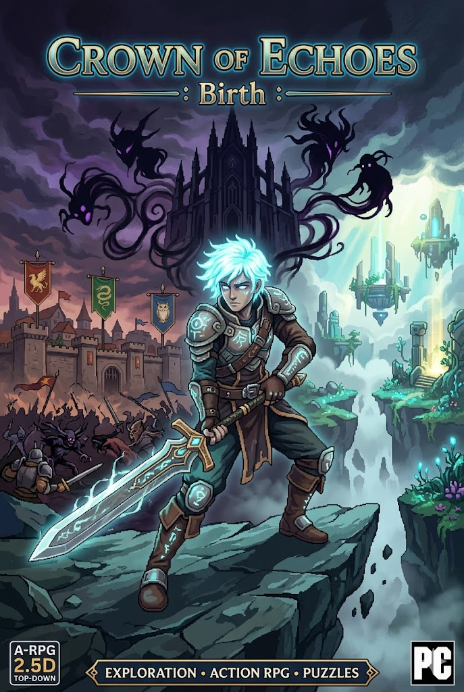

Crown of Echoes
RPG Top-Down 2D — Alundra-Like
Projet personnel de jeu vidéo développé sur Unity. Un RPG Top-Down 2D inspiré d'Alundra, mêlant exploration, combat en temps réel, puzzles et narration. Systèmes de base fonctionnels : déplacement, combat, dialogues PNJ, tilemap, caméra dynamique et cinématiques in-game avec déplacements automatisés des personnages.
⚔
Système de combat temps réel
💬
Dialogues & cinématiques in-game
🗺
Tilemap & level design
🎥
Caméra dynamique